イチジクにカミキリムシがいました。
更新日 : 2021/11/21
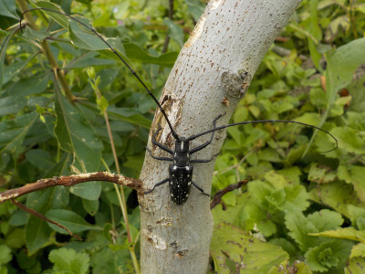
何かイチジクに悪いことをしていそう。
暖かくなったら農薬を塗ろうと思います。
更新日 : 2021/11/21

何かイチジクに悪いことをしていそう。
暖かくなったら農薬を塗ろうと思います。
更新日 : 2022/04/10
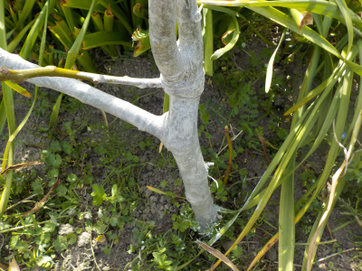
我が家のイチジクは去年沢山枯れました。理由は不明です。
これ以上減らさないように薬を塗りました。
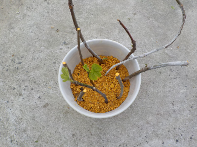
増やすように挿し木もしました。
水の管理が面倒なので底面給水鉢を使用しました。
更新日 : 2022/05/29
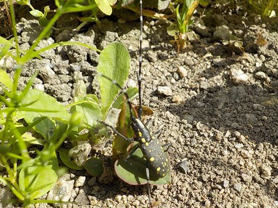
敵がいました。この虫の幼虫がテッポウムシです。
卵を産む前だったらいいんですが、どうでしょうね。
更新日 : 2022/06/11
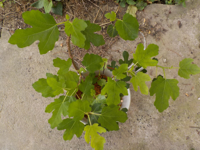
挿し木のイチジクから葉っぱが次々出ています。
もう地面に植えても大丈夫そうです。
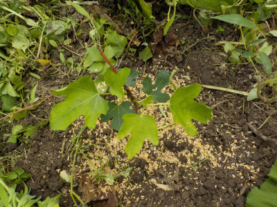
水やりが面倒なので、早く梅雨になって欲しいです。
今日は5本植えました。まだ何本か残っていますが、植える場所がないな。
更新日 : 2023/12/10
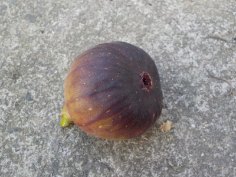
イチジクの色が濃ゆくなってて、ほどよく柔らかい個体がありました。
もうイチジクを収獲する時期じゃないですが、熟れていそうなので試しに食べてみました。
味が少し薄かったですが、普通に美味しくいただけました。食べて良かったです。
更新日 : 2023/12/24
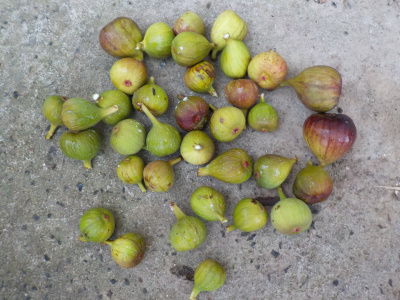
煮たら食べれるかもと思い収穫したんですが、硬くてほとんどが使えませんでした。
でも何個かは美味しく食べれたので良かったです。
更新日 : 2024/08/26
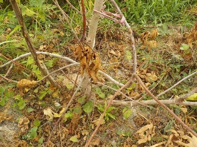
テッポウムシが原因だと思います。残念ですね。
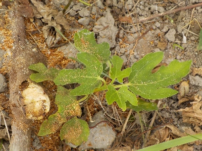
株本に枯れていない小さい枝がありました。
これが大きくなってくれるといいんだけどな。
更新日 : 2025/08/15
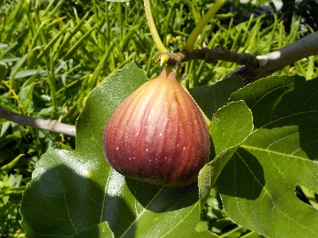
我が家で実が付いてるイチジクはこれ1本だけです。
挿し木のイチジクを、秋に地植えして増やすつもりです。
植えたら枯れ。植えたら枯れの繰り返しですが、そんなもんなんだろうな。
あんまり期待しないほうがいいかもしれない。